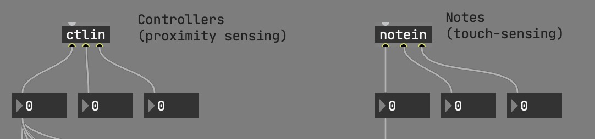
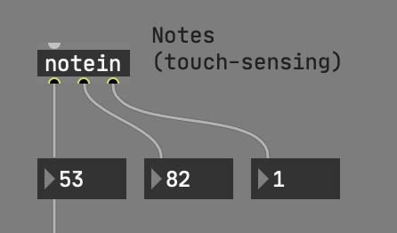
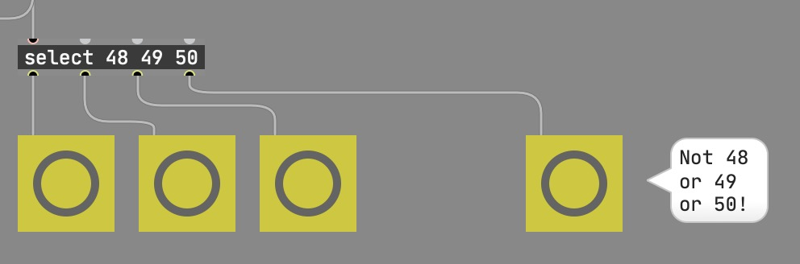
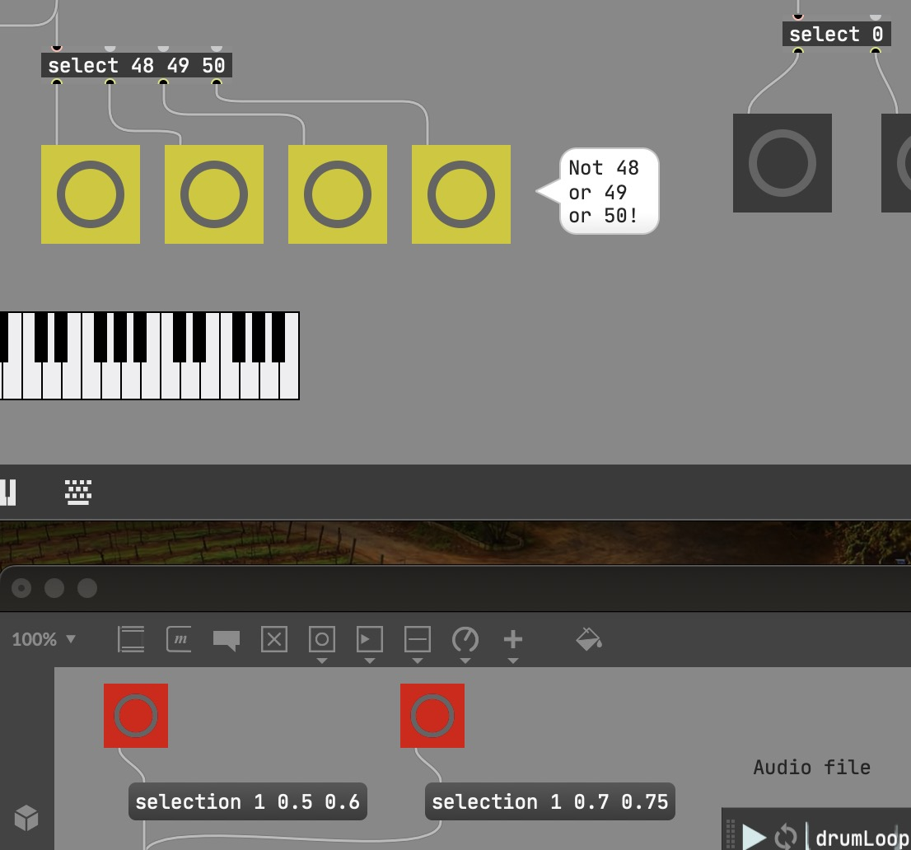

Touch Boards and Max
Nick Rothwell
Overview and Concepts
- Touch Boards and MIDI messages
- Max and Media: audio and video playback
- Integration: Touch Board as controller
Touch Boards and MIDI
- MIDI is a 40-year-old communication protocol: low-speed, numbers between 0 and 127
- Touch Boards with MIDI sketches (Midi_interface, Midi_interface_generic) can operate as MIDI controllers, generating MIDI messages
MIDI Messages
- Discrete messages, on/off: example, notes being played on a (piano) keyboard
- Continuous messages, 0 to 127: example, volume control knob
MIDI into Max
- Max supports both note and controller messages
- The Touch Board can send note messages (touch) or controller messages (proximity) - or both
Note Input
The numeric values are (right to left):
- MIDI channel (1 to 16): denotes which device is sending (or receiving)
- Velocity of note - corresponds to loudness, always 127 from Touch Board
- Pitch (note number): 48 upwards from Touch Board
Discriminating Between Values
- We want to treat the Touch Board inputs individually
- We can do this using a select object to pick out the pitch values
Audio Playback
- The audio 'jukebox' object is called playlist~
- You have to connect up audio yourself: the output object is called ezdac~
- Each playlist~ can play one file at a time. If you want more, add another playlist
Video Playback
- Very similar to audio. The object is jit.playlist
- We don't want to hear the audio tracks on video; disable by setting the vol attribute to 0
- Display video in a separate window with jit.window
- jit.window has a fullscreen attribute to project full-screen
Controlling playback regions
Both objects accept a selection message to set the playback selection
- First number: which file to set (starting from 1)
- Second number: start of selection (0.0 to 1.0)
- Third number: end of selection (0.0 to 1.0)
Final Exercise: Linking Up
Attach the buttons that are triggered by the Touch Boards to the buttons which change the selection ranges
Linking Up
- In the illustration, the Touch Board bangs the yellow buttons
- The media patcher responds to the red buttons
- Merge the code into one patcher, make the touch board change the audio and video selections